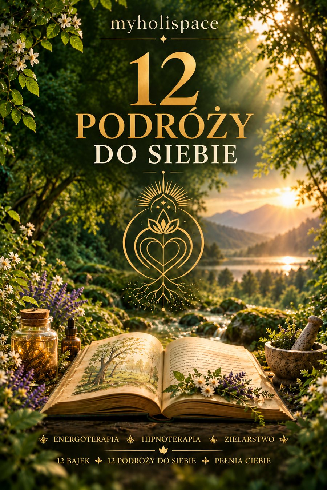
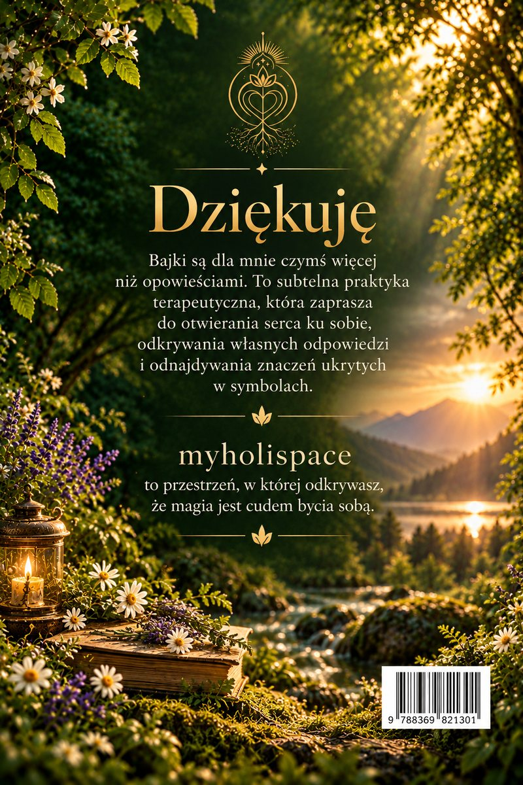

myholispace · workbook PDF
To nie jest książka, którą po prostu przeczytasz. To przestrzeń, w której możesz się zatrzymać, usłyszeć siebie i odkryć coś nowego.
12 rozbudowanych bajek terapeutycznych dla dorosłych – łagodna podróż przez emocje, myśli, wspomnienia i Twój wewnętrzny świat.
PDF · 112 stron · format A5 · plik od razu po zakupie

Co jest w środku
Wszystkie zaczynają się w tym samym miejscu – w Tobie. Możesz iść po kolei albo wybrać ścieżkę, która dziś woła najmocniej.
Ścieżka · bajki 1–4
Odkrywanie wewnętrznej siły, odzyskiwanie równowagi i głębszy kontakt ze sobą.
Ścieżka · bajki 5–8
Wyciszenie umysłu, uruchomienie wyobraźni i nowe spojrzenie na własne możliwości.
Ścieżka · bajki 9–12
Symbolika roślin, mądrość natury i jej miejsce w codziennych rytuałach troski o siebie.
Co zyskasz
Znajdziesz oddech w codziennym pośpiechu.
Przyjrzysz się temu, co czujesz i czego potrzebujesz.
Spojrzysz na własne życie z innej strony.
Zaczniesz dostrzegać swoje mocne strony i potencjał.
Zbudujesz więcej uważności i czułości wobec siebie.
Nazwiesz to, co dotąd trudno było ubrać w słowa.
Stworzysz codzienne gesty świadomej troski o siebie.
Dla kobiet, które chcą zwolnić, wrócić do siebie i zbudować mały, czuły rytuał. Możesz czytać jedną bajkę w tygodniu albo jedną w miesiącu – nie musisz po kolei.
Nie potrzebujesz doświadczenia z hipnoterapią, energoterapią ani zielarstwem. Wystarczy kilka spokojnych minut i otwartość.
Głosy czytelników
Prawdziwe słowa osób, które przeczytały „12 podróży do siebie”.
Twoja podróż może być następna
Zaczynam podróż
O autorce
Zielarka i praktyczka hipnozy transpersonalnej. W myholispace łączy pracę z ciałem i emocjami, praktyki uważności i mądrość ziół. Od ponad 15 lat zgłębia świat emocji, podświadomości i świadomości.
„Bajki są dla mnie czymś więcej niż opowieściami. To subtelna praktyka terapeutyczna, która zaprasza do otwierania serca ku sobie.”
myholispace – przestrzeń, w której odkrywasz, że magia jest cudem bycia sobą.
Czasem najważniejsza podróż nie prowadzi daleko. Prowadzi bliżej Ciebie.
Twój workbook · w środku znajdziesz
Bezpieczna płatność BLIK lub kartą przez Naffy · natychmiastowy dostęp
Bajki mają charakter literacki i inspirujący. Nie zastępują porady lekarskiej, psychologicznej ani terapii. Przed stosowaniem ziół – zwłaszcza w ciąży, w trakcie karmienia, przy chorobach przewlekłych lub przyjmowaniu leków – skonsultuj się z lekarzem lub farmaceutą.